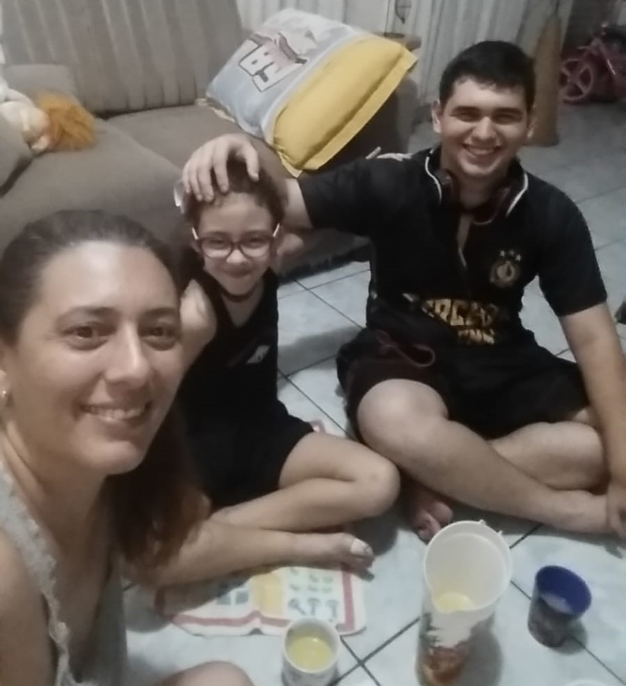
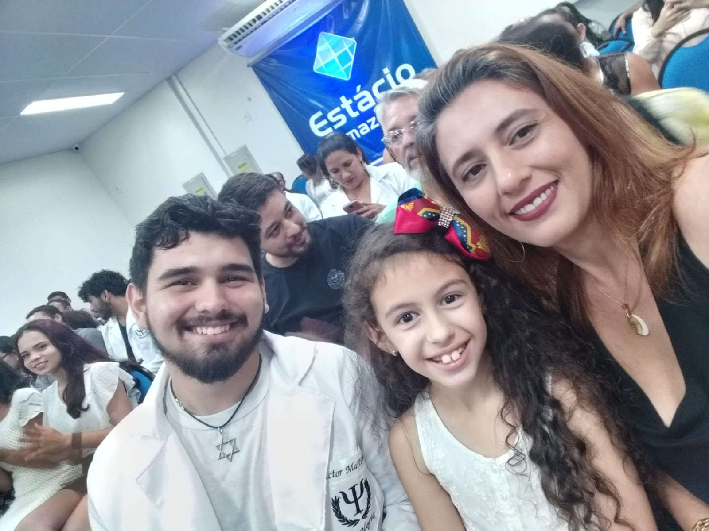
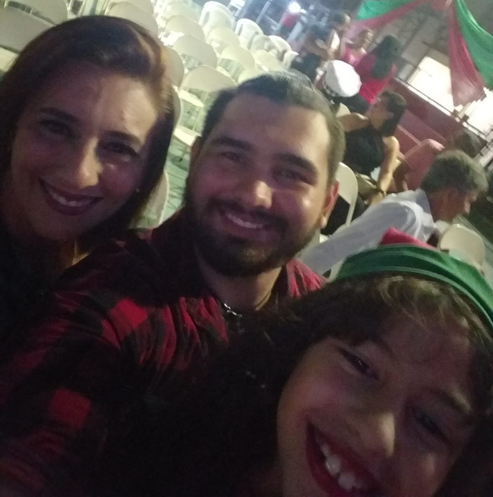
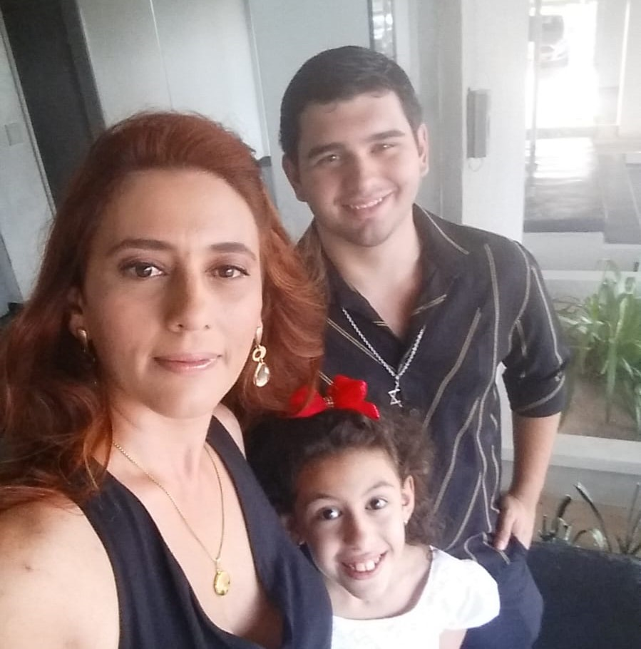

Minha querida mãe, neste Dia das Mães, gostaria de expressar minha gratidão
e admiração pelo incrível carinho, cuidado, amor e sacrifício que você sempre
dedicou a mim e aos meus irmãos.
Você é uma verdadeira guerreira, sempre disposta
a lutar pelo bem-estar de seus filhos, não importa o que aconteça.

Sempre me vem a mente de todas as noites em que você ficou acordada conosco quando estávamos
doentes, de todos os abraços apertados que nos confortaram quando estávamos passando por dificuldades
e de todas as risadas e momentos divertidos que compartilhamos juntos.

Sei que criar três filhos não está sendo fácil, mas você sempre fez isso com uma
força e determinação incríveis. Você fez muitos sacrifícios por nós, abrindo
mão de suas próprias necessidades para garantir que tivéssemos tudo do bom
e do melhor.

Mas acima de tudo, você sempre nos amou incondicionalmente.
Você é o coração da nossa família, a cola que nos mantém juntos,
a luz que nos guia em tempos difíceis e também aquele puxão de orelha quando é necessário.

Mãe, não há palavras para expressar o quanto te amo e o quanto sou grato
por tudo o que você fez por mim e pelos meus irmãos. Você é uma verdadeira
heroína e uma inspiração para todos nós. Espero que neste Dia das Mães,
possamos retribuir um pouco do amor e carinho que você sempre nos deu.
Te amo para sempre, mãe. Feliz Dia das Mães!